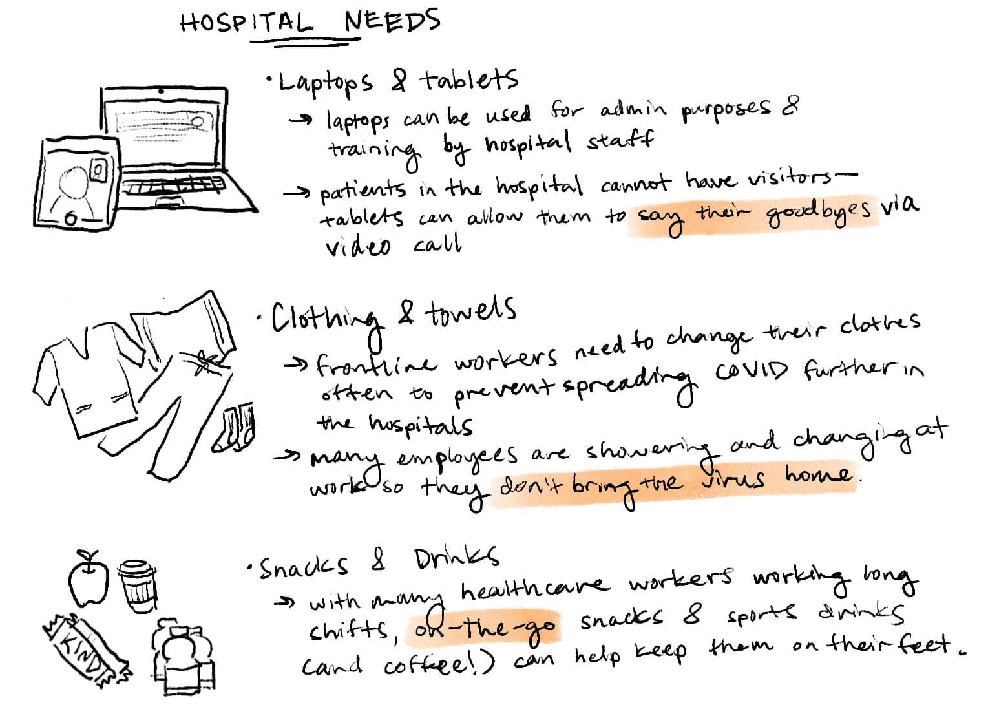
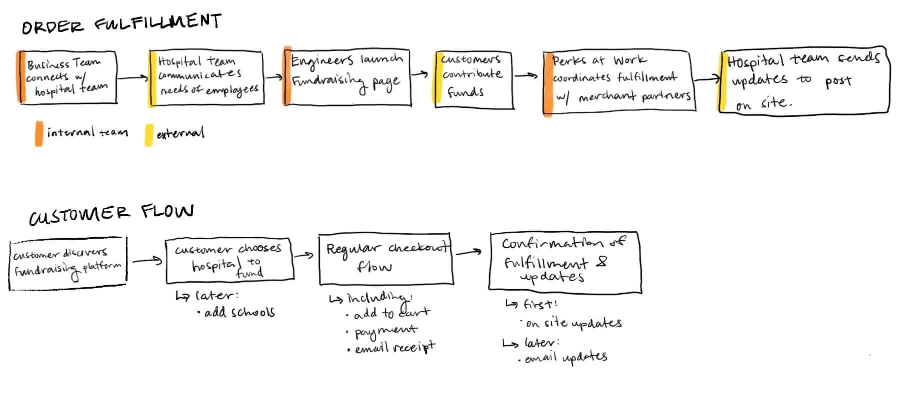
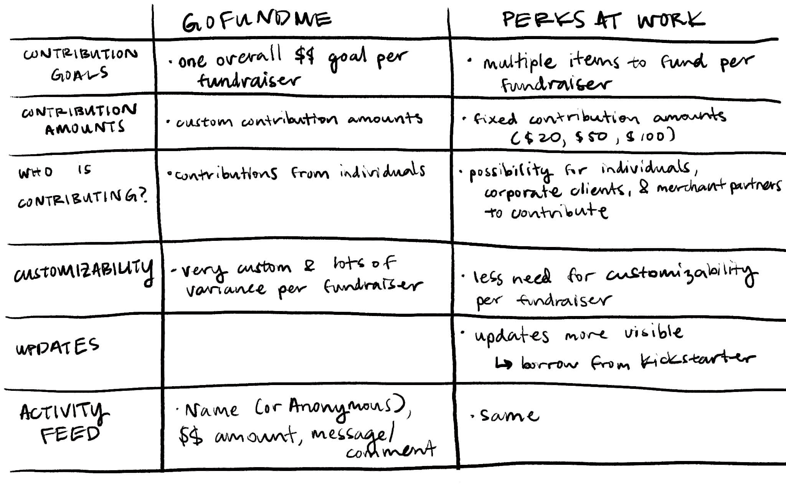
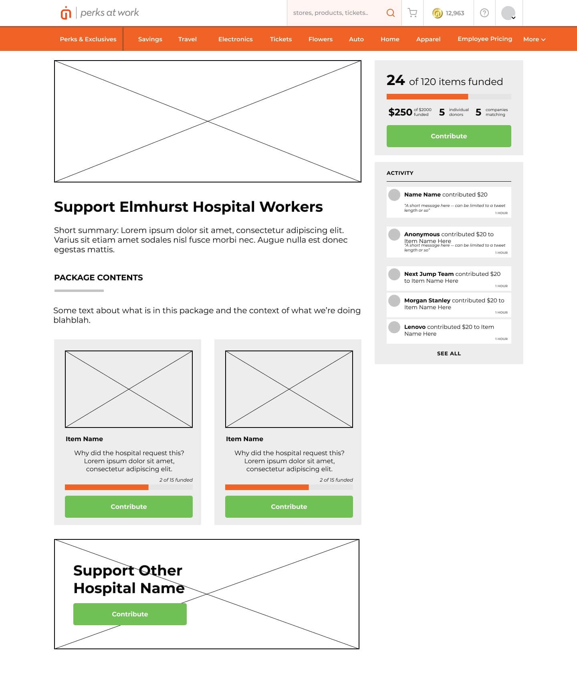
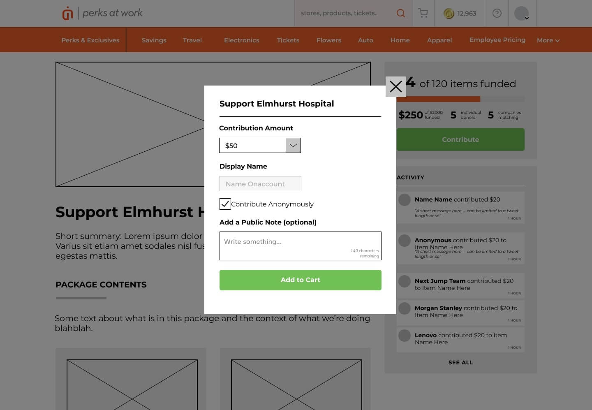
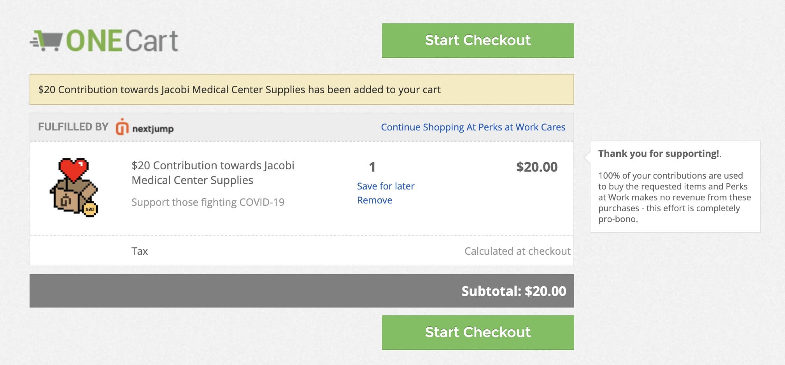
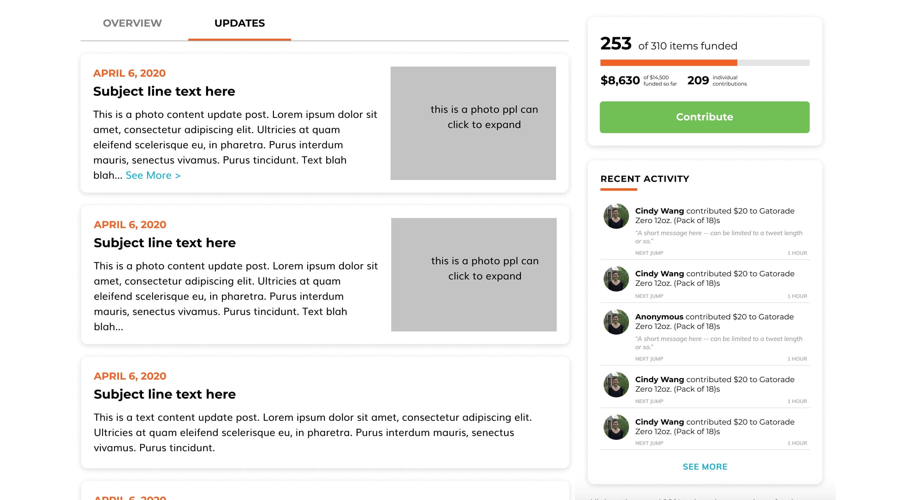
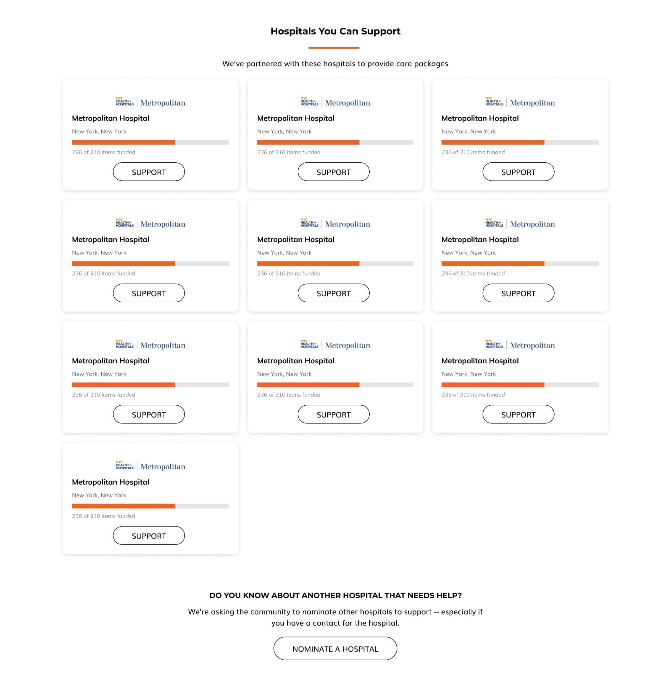

Perks at Work Fundraising
Spring 2020 • Perks at Work @ Next Jump
At the beginning of the COVID-19 pandemic, my company started an initiative to provide supplies to frontline workers at hospitals via their e-commerce platform, Perks at Work.
The problem
The impact of COVID-19 has been felt worldwide, one of the hardest hit populations being frontline workers in NYC. How might Next Jump leverage their resources to help them?
This past year has been my first time living in such a densely populated, diverse area, and the effects of the pandemic locally have been difficult to watch. With hospitals overwhelmed, Next Jump decided to push for a pro bono initiative to raise funds to build care packages for frontline workers.
My role
I served as the UX designer and graphic designer. I worked with 1 PM, a couple engineers, and 2 or 3 marketing & partnerships people.
The Final Prototype
The high fidelity mockups and prototype can be found below.
The Beginning
Next Jump runs an e-commerce platform with corporate clients and merchant partners and over 70 million unique users on the site. We were able to leverage these angles to
- Understand what hospitals needed most from our corporate contacts at NYC Health + Hospitals,
- Ask our customer base to help us fund care packages with those items
- Utilize our merchant contacts to organize order fulfillment and send these packages to the hospitals.
With our NYC Health + Hospitals contacts, we identified two of the hardest hit local hospitals: Elmhurst & Kings County as well as the items they needed the most. Beyond personal protective equipment, their greatest needs were laptops & tablets, clothing (like scrubs & towels), and snacks.
We focused on the biggest and smallest ticket items (electronics and snacks) due to our existing relationships with the merchants that sell these items.
A Brief Look at Flows
Two main flows we took into consideration were order fulfillment and the customer flow. We wanted the order fulfillment process to be scalable for many fundraisers, so we planned the product keeping in mind all of the teams involved. The overall customer flow was similar to the standard e-commerce flow.
Initial research
I looked into GoFundMe as our primary inspiration for this platform. GoFundMe is already a successful fundraising platform, so it made sense to look into their structure and determine what elements we could pull.
The most important differentiators for the Perks at Work platform were the following:
- Have individual fundraisers for different hospitals, scalable and adaptable for future, non-hospital fundraisers
- Showcase progress for each individual item, focusing on the # funded rather than the dollar amount
- Highlight contributions made by all three possible contributors (individuals, corporations, merchant partners)
- Provide updates on the fundraising, fulfillment, and delivery of the products
I mapped out a comparison between the two platforms to get a better idea of where they diverge.
Wireframes
With this in mind, I created the following wireframe for an individual hospital, adopting GoFundMe’s right sidebar highlighting overall progress and activity feed. We kept the primary CTA visible at all times. I used the left side of the screen for the details and specifics of each fundraiser, including the breakdown of progress for each item funded.
Clicking the "contribute" button would open a modal that allows customers to choose their contribution amount (fixed amounts due to tech constraints) and add a personalized message.
The rest of the purchase flow adopted our existing cart experience.
MVP
Our MVP included only funding individual items and the activity feed. We launched only for Elmhurst and Kings County Hospital. Donations began streaming in, and we began thinking about how to answer the question, "What happens after I donate?"
We wanted to keep attention on the details of the fundraiser, but still showcase updates (and potentially more information in the future) on the page.
Expanding our efforts
We added an Updates tab and navigation to highlight milestones (e.g. "Tablets completely funded!"), progress on fulfillment, and messages directly from the hospitals.
Our client success team was also very quickly expanding to several more hospitals. Thus, we needed to create a page to allow discovery of the breadth of offerings as well as an avenue for the community to nominate their own local hospitals.
Our final individual hospital page mockup also had a larger focus on telling the "story" for each hospital, adding more individualized details and messaging.
Aftermath
Within the first 48 hours of launch and very little marketing, the platform raised almost $90k for Elmhurst and Kings County Hospital.
To expand our impact, the team connected with local schools; many students do not have access to personal laptops or tablets to access online learning easily. The goal was to provide these children with the tech they need to continue their education online. Sadly, I left the company before I could see the next iteration of this project through!